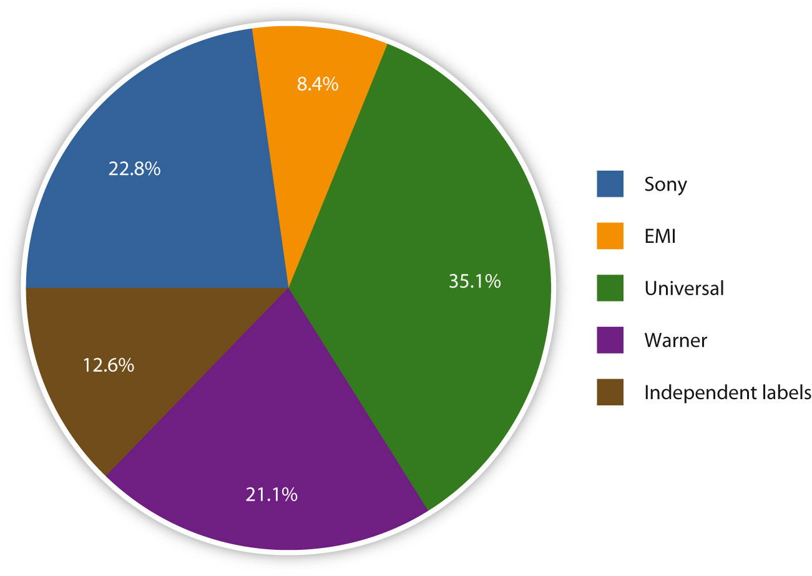

In Weezer’s 2008 song “Pork and Beans,” vocalist Rivers Cuomo sings, “Timbaland knows the way to reach the top of the charts/Maybe if I work with him I can perfect the art.”“Weezer, ‘(If You’re Wondering If I Want You To) I Want You’ Sessions,” AOL Music Sessions, http://music.aol.com/sessions/weezer-if-youre-wondering-if-i-want-you-to-i-want-you-sessions/. The lyrics, a reference to hip-hop producer Timbaland’s multiple high-profile collaborations, are an angry reaction to a meeting between Cuomo and record executives at the band’s Geffen label. During the meeting, the executives told the band members they needed to write more commercial material, prompting a defiant (though commercially successful) response.Bryan Reesman, “Weezer Goes into the Red on New CD,” Mix, September 1, 2008, http://mixonline.com/recording/tracking/music-weezer/. The incident is a reflection of the balance between commercial success and artistic expression in the music industry. Record labels need artists that inspire the record-buying public, while artists need the financial backing and expertise of record labels and their marketing teams. In recent years, tensions between artists and their labels have been heightened by the cost-cutting measures that have taken place at many companies due to the impact of online file sharing on profits.
During the 1990s, the record industry was booming. Music lovers were busy replacing their cassette tapes and vinyl records with CDs, and sales were high. In 1999, the total revenue from music sales and licensing peaked at $14.6 billion.David Goldman, “Music’s Lost Decade: Sales Cut in Half,” CNN, February 3, 2010, http://money.cnn.com/2010/02/02/news/companies/napster_music_industry/index.htm. Ten years later, record label executives were not as successful. Revenue had plunged to $6.3 billion, with the Recording Industry Association of America (RIAA) reporting declining revenue in 9 of the 10 previous years, with album sales dropping an average of 8 percent every year.David Goldman, “Music’s Lost Decade: Sales Cut in Half,” CNN, February 3, 2010, http://money.cnn.com/2010/02/02/news/companies/napster_music_industry/index.htm. Why the drastic decline? Experts agree that the primary culprit is the growing popularity of digital music, which initially began through peer-to-peer file sharingThe practice of swapping media files over the Internet.—the process of swapping media files over the Internet—such as the Napster service.
Despite a massive loss in profits over the past decade, the global music business still comprises a powerful oligopolyA market condition in which a few firms dominate an industry’s production and distribution.—a market condition in which a few firms dominate most of an industry’s production and distribution. The global reach of these few companies means that they have the promotion and marketing muscle to determine which types of music reach listeners’ ears and which become obsolete. Each of the major record labels has a strong infrastructure that oversees every aspect of the music business, from production, manufacture, and distribution to marketing and promotion.
Between 1950 and 1980, a large number of major record labels and numerous independent labels competed for a share of the musical pie. Gradually, the larger labels began buying up the independent labels, and then started trying to purchase each other. By the late 1990s, only six major labels remained: Warner, Universal, Sony, BMG, EMI, and Polygram. In 1998, Universal acquired Polygram, and 6 years later Sony and BMG merged. Sony later bought out BMG to obtain sole ownership of the company. Currently, the music industry is dominated by the so-called Big FourTerm used in the music industry to refer to the four major record labels: Universal Music Group, EMI, Warner Music Group, and Sony Music Entertainment.: Sony Music Entertainment, EMI, Universal Music Group, and Warner Music Group. The Big Four control over 85 percent of the U.S. recording music industry.“The Big Four Record Companies,” Copyright Law, Treaties and Advice, http://www.copynot.org/Pages/The%20big%20four%20Record%20Companies.html. Figure 6.11 shows a graph of the current distribution of market share.
Figure 6.18
Four major music labels control over 85 percent of the U.S. recording music industry.
In 2004, Japanese-owned Sony Music Entertainment (part of Sony) and German-owned BMG Entertainment (part of Bertelsmann) merged to create Sony BMG. The joint venture was a bid to overcome weak retail sales, online file sharing, and fierce competition from rival forms of media.Reuters, “Sony, BMG Agree on Music Merger,” CNN World Business, November 7, 2003, http://edition.cnn.com/2003/BUSINESS/11/06/sony.bmg.reut/. Independent music companies opposed the merger in Europe, arguing that it created a market imbalance, but the European Commission upheld its decision to allow the consolidation. In 2008, Sony bought out BMG’s 50 percent stake for $1.2 billion.David Kaplan, “Sony Buys Bertelsmann’s 50 Percent Stake In Sony BMG for $1.2 Billion,” PaidContent.org: The Economics of Digital Content, http://paidcontent.org/article/419-sony-buys-back-bertelsmanns-50-percent-stake-in-sony-bmg-company-rename/. The company now has full ownership of the second-largest record label in the world. Subsidiary labels owned by Sony include Arista, Columbia, Epic, Jive, RCA, and Zomba, and the company represents numerous artists, including Alicia Keys, Ke$ha, and Sade.
The EMI Group is a British company, most famous for introducing the Beatles to the world through its Parlaphone subsidiary. Originally formed in 1931, through a merger of the UK Columbia Gramophone Company and the Gramophone Company, the money-losing company was taken over in 2007 by private equity firm Terra Firma Capital Partners Ltd. for $6.5 billion.Anne-Sylvaine Chassany, “Terra Firma Sues Citi over EMI Takeover,” Bloomberg Businessweek, December 18, 2009, http://www.businessweek.com/globalbiz/content/dec2009/gb20091218_584654.htm. In an attempt to return the company to profit following the deal, Terra Firma head Guy Hands began slashing costs, eliminating more than 1,000 jobs in the process.Julia Finch, Owen Gibson, and Alex Needham, “Radiohead Quit, Robbie Williams on Strike—and Now 1,000 Jobs Cut,” Guardian (London), January 12, 2008, http://www.guardian.co.uk/media/2008/jan/12/robbiewilliams.emi. Following the takeover, several high-profile artists quit the label, including Radiohead, who described the new management structure as “a confused bull in a china shop.”Julia Finch, Owen Gibson, and Alex Needham, “Radiohead Quit, Robbie Williams on Strike—and Now 1,000 Jobs Cut,” Guardian (London), January 12, 2008, http://www.guardian.co.uk/media/2008/jan/12/robbiewilliams.emi. As of 2010, the struggling company, which represents artists such as Coldplay, Lily Allen, and Pink Floyd, faces being taken over by its bankers after failing to secure a deal to sell its North American distribution rights to one of the other major labels.Associated Press, “Music Group EMI Facing Bank Takeover After Talks Fall Apart,” Los Angeles Daily News, April 2, 2010, http://www.dailynews.com/business/ci_14805128.
Originally launched as Warner Bros. Records in 1958, the Warner Music Group gained momentum during the 1960s and 1970s with the purchase of several important new labels, including Elektra and Atlantic. Like the other major labels, the company began to suffer from declining sales due to the advent of free online music swapping. In 2004, Time Warner decided to abandon its record label and offloaded its music division to an investor group so that it could focus on more profitable areas, such as Time Warner Cable. The $2.6 billion deal included more than 800 artists, including Linkin Park, Metallica, and Kid Rock, as well as the group’s publishing arm, Warner/Chapell Music, which owned more than a million copyrights.David Vise, “Time Warner Sells Music Unit to Bronfman for $2.6B,” Washington Post, November 24, 2003, http://www.washingtonpost.com/ac2/wp-dyn/A9806-2003Nov24.
After a brief period of independence, Warner Music Group went public in 2005, making the company the only stand-alone music company to be publically traded in the United States. To prepare for its public offering, the company made around $250 million in cuts through layoffs and consolidation.Jeff Leeds, “A Band Makes Its Case against Record Label,” New York Times, May 9, 2005, http://www.nytimes.com/2005/05/09/arts/music/09linkin.html. The move caused concern among the label’s artists that investors’ interests would take priority over performers’ interests and prompted rock-rap group Linkin Park to demand an early release from its contract with Warner. Guitarist Brad Delson characterized the company as “bad news,” adding, “[w]e don’t want to be around to see what happens.”Jeff Leeds, “A Band Makes Its Case against Record Label,” New York Times, May 9, 2005, http://www.nytimes.com/2005/05/09/arts/music/09linkin.html. The band eventually worked out a lucrative new deal with the company. As of 2010, Warner Music Group is considering the possibility of purchasing EMI should the struggling company fail to meet its debt repayments.Jonathan Sibun, “KKR and Warner Music Talk Over Break-Up Bid for EMI,” Telegraph (London), March 14, 2010, http://www.telegraph.co.uk/finance/newsbysector/retailandconsumer/7443456/KKR-and-Warner-Music-talk-over-break-up-bid-for-EMI.html.
The largest of the Big Four record labels, Universal Music Group established itself as an industry giant in 1998, with the merger of PolyGram and Universal. Both companies already owned numerous subsidiaries, and the merger of the two entertainment conglomerates created the largest music company in the world. Wholly owned by French international media firm Vivendi since 2006, the company has gone on to acquire BMG Music Publishing and Univision Music Group, among smaller labels. Its acquisition of U.K. labels Sanctuary Music Group and V2 in 2007 drew criticisms from the independent sector that the recording giant was heading toward a monopoly.Adam Sherwin, “Indies Accuse Universal of Gaining Monopoly” Times (London), October 1, 2007, http://business.timesonline.co.uk/tol/business/industry_sectors/media/article2563208.ece. The Association of Independent Music claimed that the deals would “further marginalize a vibrant independent sector, serving to stifle competition and narrow consumer choice.”Adam Sherwin, “Indies Accuse Universal of Gaining Monopoly” Times (London), October 1, 2007, http://business.timesonline.co.uk/tol/business/industry_sectors/media/article2563208.ece. Despite the objections, both deals went ahead.
Universal Music Group’s catalog of artists includes U2, Amy Winehouse, Lady Gaga, Taylor Swift, and the Black Eyed Peas. Despite its powerful status, the company has suffered from declining sales of physical products along with the rest of the music industry. As of 2010, UMG plans to lure customers back to purchasing physical CDs by lowering prices to under $10 (the average price of a digitally purchased album).Anna Swindle, “Universal Music Group Plans to Lower CD Prices,” Paste, March 23, 2010, http://www.pastemagazine.com/articles/2010/03/post-69.html.
In addition to the four major record labels, independent production companies, or indie record labelsIndependent record companies, also known as indies, not affiliated with any of the Big Four., operate without the financial assistance of one of the Big Four (although in recent years, the definition has shifted to incorporate indies that are partially owned by one of the major labels). Ranging from small grassroots or garage labels to large, profitable businesses, indie labels typically produce music that is less commercially viable and more eclectic than the music produced by the larger mainstream companies.
Independent labels have played a small but significant role in the music industry for as long as there has been a market. When patents held on sound recording technologies entered the public market in the 1920s, opportunities arose for small recording companies to enter the business. To avoid competing with larger firms such as RCA and Edison, the new independent companies focused on neglected areas of the music industry, such as folk, gospel, and rural blues. When the major labels decided during World War II to abandon then-unprofitable music recorded by black artists, the independent labels quickly rushed in to fill the void, enjoying a boom during the rock and roll era when R&B music soared in popularity. Between 1955 and 1959, the U.S. market share of the major companies had dropped from 78 percent to 44 percent, while the market share of independent companies rose from 22 percent to 56 percent.“Rock and Roll Timeline,” The History of Rock ’n’ Roll, October 15, 2009, http://www.history-of-rock.com/rock_and_roll_timeline.htm. Sun Records played a particularly important role in the development of both rock and roll and country music by releasing records by Elvis Presley, Jerry Lee Lewis, Johnny Cash, and Roy Orbison.
During the 1970s punk era, indie labels profited from the antimainstream, anticorporate attitude of many punk rock bands, which disassociated themselves from the major labels. The indie-rock movement grew throughout the 1980s and 1990s, with labels such as Sub Pop, I.R.S., and Epitaph and epitomized by the music of the Smiths, the Stone Roses, R.E.M., and the Jesus and Mary Chain. This movement was known as “college rock,” which would later become alternative rock. However, as alternative rock grew in popularity, grunge bands such as Nirvana, Soundgarden, and Pearl Jam broke into the mainstream. This attracted the attention of major record labels, which began to look at the music with a commercially oriented approach. Many artists found themselves faced with a dilemma: stay true to their indie roots or “sell out” to a major record label in the hope of financial gain.
When Seattle grunge band Nirvana began to achieve success in the late 1980s, they were signed to independent label Sub Pop. Popular among college students, the band’s 1989 album Bleach sold well enough for the band to consider moving to a bigger label. Amid rumors that Sub Pop was planning on signing as a subsidiary of a major record company because of financial difficulties, the band decided to cut out the middleman and seek a new contract itself.Chris Norris, “Ghost of Saint Kurt,” Spin, April 2004, 57–63. Signing with DGC Records (an imprint of Geffen), Nirvana released Nevermind in 1991 and found itself thrust into the mainstream. Within 9 months of its release, the album had sold more than 4 million copies (compared to 30,000 copies of Bleach), knocked Michael Jackson’s Dangerous from the top of the Billboard chart, and placed Nirvana at the forefront of public attention.
For Sub Pop, Nirvana’s success was both a blessing and a curse. Under severe financial stress, the label had begun layoffs in the spring of 1991, reducing its staff of 25 to a core group of five employees.Sub Pop Records, “About Us,” April 2, 2008, http://www.subpop.com/about. With the royalties it received from Nevermind, along with the buyout from Nirvana’s contract, and potential royalties from any future albums, Sub Pop was pulled back from the brink of collapse. However, the carefully crafted niche that Sub Pop had found in the music industry vanished. Eager to discover the next big thing in grunge, major labels began scoping out Seattle bands, offering them large advances against which the smaller independent companies could not compete. Sub Pop chief Bruce Pavitt said of one band, “I was told by our head A&R agentTalent agent working on behalf of a record label who finds and develops new artists with commercial potential. that they would be happy with a $5,000 advance. Two months later we were giving them a check for $150,000.”Sub Pop Records, “About Us,” April 2, 2008, http://www.subpop.com/about. In 1995, the company sold 49 percent of its shares to Warner Bros in exchange for financial backing.
Nirvana had equally ambivalent feelings about the transition from a small independent label to a major record company. At a concert shortly after the band signed their deal with DGC, lead singer Kurt Cobain declared to the crowd, “Hello, we’re major-label corporate rock sellouts.”Benjamin Kunkel, “Stupid and Contagious,” New York Times, May 6, 2007, http://www.nytimes.com/2007/05/06/books/review/Kunkel.t.html. Having spent several years among the anticommercial, do-it-yourself grunge crowd in Seattle, the band’s members were uncomfortable with their new position as wealthy rock stars.
Although they frequently lose their talent to industry heavyweights, indie labels hold several advantages over major record companies. They are generally smaller, enabling them to respond to changing popular musical tastes more quickly than large companies with more cumbersome processes and procedures in place. This enables them to pick up on emerging trends and bring them to market quickly. Although unable to compete with the distribution and promotion power of the major labels, indie labels can focus on niche markets, tapping into regional trends. For example, hip-hop’s initial commercial successes in the late 1970s and early 1980s came through small independent labels such as Tommy Boy and Sugar Hill. Realizing that record executives would find the raw street version of hip-hop unworkable, the labels came up with the idea of using house bands to play with emcees to improve the commercial viability of the genre. An early example of this process was Sugarhill Gang’s “Rapper’s Delight,” which was a worldwide hit.Rhome Anderson, “Hip to Hip-Hop,” Washington Post, February 19, 2006, http://www.washingtonpost.com/wp-dyn/content/article/2006/02/16/AR2006021602077.html.
Figure 6.19
Artists who have switched from an independent label to a major label midway through their careers include Green Day, Nirvana, and Death Cab for Cutie.
The nature of the independent production process may also prove advantageous. A shorter path from creation of the music to distribution and promotion makes it easier to maintain the artist’s original vision. For this reason, many artists prefer to work with independent labels, believing the final product to be more authentic. This argument is also used by some fans of independent labels, who trust companies that only produce one brand of music to adhere to a consistent sound and musical style.
A popular trend among major record labels is to allow high-profile recording artists to front their own indie labels with the financial backing of the larger company. Frequently referred to as vanity labelsSpin-off indie labels financially backed by one of the major record companies and headed by high-profile artists to create a “label within a label.”, these are spin-offs of the parent company that enable artists to run “a label within a label” and release music by other performers that they admire. Examples include Madonna’s Maverick, Trent Reznor’s Nothing, and Michael Jackson’s MJJ. Allowing an artist to create a vanity label benefits a major record label in several ways: It encourages artists to remain with the parent company for longer than they may have otherwise done, it reduces the amount of promotional effort required by the label because fans are likely to be attracted to new music based on the recommendation of favorite artists, and it increases the likelihood that bands in niche genres will become big moneymakers for the company.
However, vanity label projects often prove risky and unsuccessful because the label provides all of the money while the proven artist is responsible for developing new acts, and recent losses in the music industry have caused major labels to cut funding for artist-run ventures. For example, Mariah Carey’s label, Crave, ended up dissolving less than a year after it opened. In 2004, Universal Records President Monte Lipman commented, “Back in the day, when the industry was a lot healthier, it was ‘OK, here’s $2–$3million. Go start your label and let us know when you’re ready to start your first act.’ Those days are absolutely over.”Associated Press, “Record Cos. Wary of Vanity Label Deals,” Jacksonville (FL) First Coast News, June 28, 2004, http://www.firstcoastnews.com/news/strange/news-article.aspx?storyid=20660.
Draw a T-chart. Label the left-hand column Major Record Labels and the right-hand column Independent Record Labels. Using the information in this chapter, your own knowledge, and further Internet research, list the advantages held by each type of label in the music industry. Consider the size and structure of each type of company, financial issues, artist preferences, and the impact of digital distribution.
Major Record Labels |
Independent Record Labels |
|---|---|
|
|